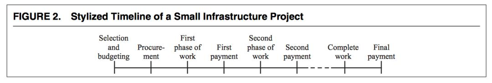
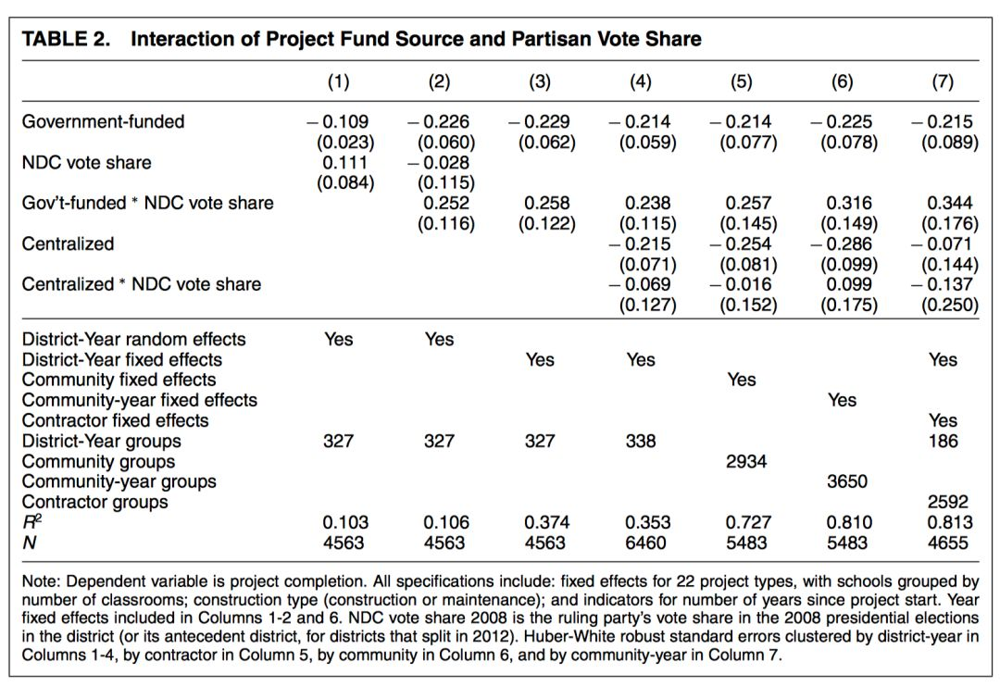

收录于合集
#比较政治学 121 个
#国家建构与国家发展 70 个
文献来源： Williams, M. J. (2017). The political economy of unfinished development projects: corruption, clientelism, or collective choice?. American Political Science Review , 111(4), 705-723.
作者简介： Martin J. Williams，牛津大学Blavatnik政府学院公共管理副教授，研究兴趣为公共管理，政策执行和政策评估
在最需要基础设施建设的发展中国家中，存在大量的烂尾工程。在加纳，有三分之一的公共工程最终半途而废，使得政府有五分之一的公共财政支出被浪费。为什么同样的一个政府愿意投资一项新的基础设施工程，却又打算半途而废？这一问题使得政策科学家感到从理论上解释的困境。围绕这一问题，作者检验了在2011年到2013年间，加纳地方政府兴建的超过14000个工程，并提出造成烂尾工程的原因并不是腐败和庇护主义，而是集体选择结果的不稳定。
背景： 公共服务供给的分权模式
加纳的总统由该国全体人民通过直选产生，而且每次选举总是十分接近且充满竞争性。在2008年的大选中，赢家只不过以40586票（政观注：加纳当年人口为2326万人）的微弱差距获胜。在加纳选举中，参与竞争的主要政党是全国民主大会党（NDC）和爱国者党（NPP）两大党。而提供公共物品则是加纳政治家赢得选票的重要手段。那些涉及到基础设施建设等大型社会工程，则是所有公共物品中最为重要的部分。因此，很容易理解执政者有充分的动机在国内的所有选区上兴建基础设施工程以获得尽量多的选票。
但是，在加纳提供公共物品的职能主要是由地方政府来承担的。加纳的地方行政长官由总统直接任命，而地区议会中70%的议员为直选产生，剩余30%的议员则由总统直接任命。在发展中国家，对于社会工程的需求很大，但是资源和资金通常是很有限的。上马哪些工程项目首先由地方的计划和协调部门起草一个名单，再交由行政委员会进行审议。行政委员会由地方行政部门和由地方议会议员选举出的部分成员联合组成。通过后再交由地方议会做最后的调整。由于计划和预算常常不能得到严格的执行，实际上关于预算优先供给哪些项目的政治辩论总是要持续一整年。
地方开展社会工程的来源主要有两个。一是地方议会基本基金（District Assemblies Common Fund），二是地方发展基金(District Development Facility)。前者主要是由中央政府定期给付。后者虽然也有30%来自中央政府的资金，但主要还是由捐助者资助的。地方政府都可以根据自己的选择来在各项社会工程中配置这些资金。但使用来自捐助者出资的资金需要在完成上一个工程的情况下才能上马新项目。实际上，在资金来源方面还存在着加纳教育信托基金(Ghana Education Trust Fund)可供工程项目使用。但是这一基金的钱完全由中央政府掌控，不直接划拨到地方政府手中，而是直接付给地方项目的承包商。
烂尾工程：集体选择动态变化的结果
之前关于烂尾工程的经典解释主要有两种理论。 第一种是庇护主义（clientlism）理论。 这种理论认为，资源的浪费是源于对于有限资源的策略性分配不均造成的。选举人可能以社会工程作为奖赏支持者惩罚反对者的工具。在面临大选时，选举人可能在资金不充足的情况下也做出盲目的承诺以赢得支持。根据这一理论，在加纳进行总统选举的2012年，工程的完成率应比选举前和选举后更低。实际情况却并不是如此。 第二种理论认为烂尾工程源于政治腐败 。这一理论指出，工程项目给了政府所偏好的承包商，但是承包商在完成工程上却缺乏压力。承包商和政府也将久拖的工程作为自己吃回扣的来源。如果是这样的话，那么未完成的工程一般就要比正常花费更多的资金。但实际上那些半途而废的工程大都是因为资金不到位停工的。
因此，对于这一问题，作者提出了另外一种解释理论： 烂尾工程是在有限资源情境下，集体选择动态变化的结果。 他强调作为集体选择结果的公共开支结果并非动态一致的。因为工程大多要持续较长的时间，在较长的时间段内，公共开支的优先度可能发生变化，造成决策者对原有工程的评估发生改变。如图2所示，在加纳，一整个工程要分好几个阶段，资金按阶段支付。哪一个阶段资金不到位都会导致停工。

集体选择的动态性很难直接测量，作者选择从间接影响集体选择的因素入手。由总统任命的地区行政长官（District Chief Executive）可以利用自己对计划和协调部门控制实现在工程选择上的议程设置，并利用自己在行政委员会的强势地位确保自己所偏好的工程尽量通过，并在之后对地方议会决策中尽量确保工程完工。而支撑他们这么做的强大动力就是社会工程的完成对执政党有利。议会中由总统委任的成员也有类似的偏好和动力。而对于选举议员而言，他们则期望社会工程能落到自己的选区，至少他们所支持的项目应该在选举上对自己党派有帮助。因此地方工程的完成率应与议员对执政党支持度紧密相关。此外，工程的完成度还应与工程资金的来源有关。正如前文所述，使用来自捐助者出资的资金需要在完成上一个工程的情况下才能上马新项目，因此来自这一方面的工程应有更高的完成率。资金来源的影响在那些和反对党相关项目上应体现得更明显，因为与反对党相关的项目本身更容易受到集体决策失败的影响。但是在执政党有着高支持度的选举中，由政府资金资助的项目要比由捐助者资金支持的项目完成率更高。
实证检验
作者选取了线性概率模型（LPM）来对理论进行检验，结果如表2所示。在模型1中，在资金来源上，作者所构建的是否为政府资助资金的二分变量的系数为-0.109。这说明，在其他因素相同的情况下，采用政府资助资金的社会工程要比捐助人资助的社会工程完工率低10.9%。模型2添加了资金来源和执政党支持率的交互项。与前面谈到的集体选择理论一致，执政党投票率对于因变量的作用完全是政府资助资金驱动的。模型3在模型2的基础上，采用地区- 年份的固定效应模型来消除可能的来自地区因素的影响。模型4则把中央掌控的工程也纳入到分析中。如果按照庇护主义理论那样，执政者把社会工程当作奖惩的工具，那么执政党支持率对于中央项目的作用应和其对政府资助项目的作用类似，但实际上产生的效果是完全不同的。在反对党更强的地区，由于地方集体选择不稳定的情况，政府资助项目的完成度受到了限制。模型5-7则基于结论稳健性的考虑采用不同的固定效应或随机效应模型进行检验。

从结论上看，本文1）提供了目前最为全面的对于加纳基础设施烂尾情况的程度和成本分析；2）并进一步提出这一现象最好的解释框架为集体选择过程中动态非一致的低效结果；3）由于集体行为造成的失败可以通过调和财政来源的机构来进行弥补。
编后记： 本文作为一篇政策分析的文章，为分析发展中国家中大量存在的政策失败案例提供了路径，对财政资源浪费的原因进行了理论化思考。并为政府机关和工程出资者都提供了政策启示。此外，本研究和国家能力建设息息相关，在政治经济学领域对政府如何“更好地”进行再分配，作了回答。
编译：赵德昊 祖梓文
审读：杨端程
编辑：吴温泉


“广告点一点，也是支持学术公益 ”
”
政文观止
微信扫一扫赞赏作者 __赞赏
已喜欢，对作者说句悄悄话
取消 __
发送给作者
发送
最多40字，当前共字
上一页 1/3 下一页
长按二维码向我转账
受苹果公司新规定影响，微信 iOS 版的赞赏功能被关闭，可通过二维码转账支持公众号。